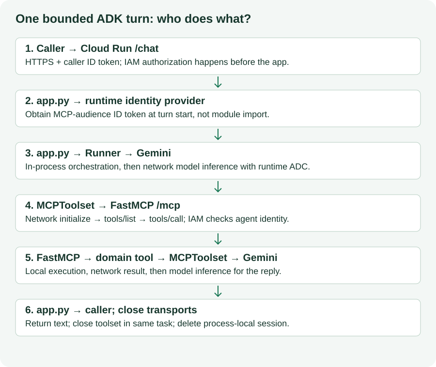

Your merchant can now ask a question in ordinary language. Google ADK runs the agent, Gemini interprets the request and requests tools, MCP carries structured calls, and server-side code owns validation and execution. IAM authorizes cloud invocation. None of those components alone proves a payment outcome.
This is Lab 2 of From Code to Cash: Building Agentic Payment Systems with M-Pesa, Apigee, and Google Cloud. Build a private Cloud Run agent using Lab 1's endpoint. The core deliberately exposes only catalog, calculation, preparation and interpretation tools to the agent.

Open this diagram at full size
MCPToolset using the source's Google ADK 1.14.0 API.The original greeter → planner → formatter chain is simplified to one tool-using agent. That removes prompt-state handoff ambiguity and keeps this lab focused on remote tools. Multi-agent formatting is a later extension, not a security boundary.
Plan about 80 minutes including installation and source builds, plus permission delays. These are estimates, not a scheduled event duration. Cloud/model execution was not performed during authoring; expected outcomes below are acceptance criteria.
Author: Ngesa Marvin. AI/ML Lead. Electrical Engineer. GDE ML/AI. Founder, Nairobi AI.
Complete Lab 1's protected deployment and remote read-only smoke check. Carry forward PROJECT_ID, REGION, MCP_SERVICE_NAME, MCP_SERVICE_URL, AGENT_SERVICE_NAME, MCP_RUNTIME_SERVICE_ACCOUNT, RUNTIME_SERVICE_ACCOUNT, and the local WORKSHOP_ROOT path. Do not transfer Daraja credentials or human ID tokens into the agent container.
In your chosen Cloud Shell or local Google Cloud CLI terminal:
export WORKSHOP_ROOT="/absolute/path/to/decode-codelabs"
source "$WORKSHOP_ROOT/.work/workshop.env"
gcloud config get-value project
gcloud run services describe "$MCP_SERVICE_NAME" --project="$PROJECT_ID" --region="$REGION" --format='value(status.url)'
gcloud run services get-iam-policy "$MCP_SERVICE_NAME" --project="$PROJECT_ID" --region="$REGION"
Replace the local path. Compare the discovered URL to MCP_SERVICE_URL; update your non-secret workshop.env if needed. The URL must be the service origin, not /mcp, not an invented hostname, and not an Apigee proxy. A URL is not a credential.
Before continuing, rerun Lab 1's smoke_client.py using its environment, MCP_ENDPOINT="${MCP_SERVICE_URL}/mcp", and a freshly exported human ID_TOKEN. That proves your human caller can reach the service; it does not prove the agent runtime has permission.
Checkpoint: the MCP service is still running in preparation-only mode, unauthenticated calls are denied and human tool discovery returns six tools.
Recovery: 403 from Lab 1 is an IAM problem to resolve before debugging ADK. A local-only Lab 1 endpoint is not reachable from Cloud Run through localhost. Deploy Lab 1 or complete only the local tests in this lab and record the cloud path as unverified.
Run from the supplied workshop folder. This creates a separate working project and refuses to overwrite one that already exists.
cd "$WORKSHOP_ROOT"
test ! -e .work/lab2 && cp -R labs/02-adk-payment-agent/sample-code .work/lab2
cd .work/lab2
python3.11 -m venv .venv
source .venv/bin/activate
python -m pip install -r requirements.lock
python -m unittest -v test_agent
If using only the website, download Lab 2 sample code and unzip its sample-code directory as .work/lab2 alongside Lab 1. On restart, enter that directory and activate its own .venv. Do not reuse Lab 1's virtual environment.
The sample files are complete:
sample-code/
agent.py Agent factory and explicit safe-tool allowlist
app.py Private /chat API; bounded request and cleanup
test_agent.py Non-networked lifecycle, filtering and failure checks
requirements.txt Direct version pins
requirements.lock Resolved dependency versions
Dockerfile Cloud Run startup using PORT
.env.example Placeholder configuration only
Expected: the local agent tests pass without a model or cloud credentials. They mock token acquisition, model events and toolsets. This verifies local lifecycle behavior; it is not an end-to-end Gemini test.
Direct pins include Google ADK 1.14.0, MCP SDK 1.14.1, google-genai 1.36.0, google-auth 2.40.3, FastAPI 0.116.1 and Uvicorn 0.35.0. python-dotenv is explicitly adjusted to 1.1.1 for the validated shared authoring resolution; the deployed app uses environment variables rather than loading .env files.
Recovery: an import error generally means the wrong interpreter/environment or an incomplete installation. Use python -m pip check and reinstall the supplied lock before changing code.
agent.py and app.pycreate_agent(endpoint, headers) constructs Agent and MCPToolset without contacting the network at import time. StreamableHTTPConnectionParams comes from google.adk.tools.mcp_tool.mcp_session_manager. This follows the pinned version's source, even though newer documentation may use McpToolset spelling or additional authentication APIs.
The explicit allowlist contains six names:
SAFE_TOOLS = ["list_products", "get_product", "calculate_order_total", "validate_stk_push_payload", "parse_stk_callback", "explain_stk_error"]
It excludes initiate_stk_push even if a server operator later enables that tool. The server's disabled-by-default registration is the primary core payment gate; the client allowlist adds another code boundary. Prompts explain behavior but cannot authorize money movement.
POST /chat accepts a JSON object with message. It creates a new random session, acquires a token, runs ADK, returns a final response, closes the toolset and deletes the session. The 120-second turn timeout keeps the token use bounded; it does not implement persistent token refresh. Every subsequent request obtains another token. Runtime tokens normally last about an hour; the provider controls actual expiry.
This edition intentionally does not pool long-lived authenticated MCP sessions. Connection contexts must be closed in the same task that opened them. finally performs cleanup on success, failure and timeout. A future reusable-session implementation would need token refresh, reconnection and carefully owned asynchronous lifecycles.
ADK maintains conversation state only within the request. There is no cross-request memory, session database or per-user history authorization. Each Cloud Run instance has separate memory; limiting instances does not make it durable. The sample is a teaching API for trusted IAM callers, not an authenticated multi-tenant storefront.
Checkpoint: tell a partner which calls are in process (Runner, domain validation), which are network calls (Vertex inference, MCP HTTPS), and which evidence would establish a payment result (external authoritative evidence, absent here).
Use the same approved project and region as Lab 1 unless you deliberately plan and document cross-project access.
gcloud services enable aiplatform.googleapis.com --project="$PROJECT_ID"
gcloud iam service-accounts describe "$RUNTIME_SERVICE_ACCOUNT" --project="$PROJECT_ID"
An administrator grants the agent runtime Vertex access on the project and invoker on only the MCP service:
gcloud projects add-iam-policy-binding "$PROJECT_ID" \
--member="serviceAccount:${RUNTIME_SERVICE_ACCOUNT}" --role=roles/aiplatform.user
gcloud run services add-iam-policy-binding "$MCP_SERVICE_NAME" --project="$PROJECT_ID" --region="$REGION" \
--member="serviceAccount:${RUNTIME_SERVICE_ACCOUNT}" --role=roles/run.invoker
These IAM changes may take a few minutes. The deployer and build identity retain the separate prerequisites from Lab 1. A human caller also needs service-level invoker on the agent after deployment. Giving the human invoker on MCP does not authorize the agent runtime automatically.
export GOOGLE_GENAI_USE_VERTEXAI=true
export GOOGLE_CLOUD_PROJECT="$PROJECT_ID"
export GOOGLE_CLOUD_LOCATION="global"
export MODEL="gemini-3.8-flash"
The source used gemini-2.5-flash. The current primary model lifecycle page lists its retirement as 20 October 2026, before this edition's 14 November 2026 audit. This edition therefore explicitly selects gemini-3.8-flash, a listed replacement, rather than deploying a retired identifier. The factory requires MODEL instead of silently defaulting. This is a documented configuration migration; the ADK/SDK versions remain pinned to the locally tested source-compatible APIs.
Before deploying, confirm access, regional availability and tool-calling behavior for this model in your project. Its compatibility with the old pinned SDK has not been verified through model inference. The model page lists global support, so the model location above deliberately differs from the Cloud Run region. Use it only if your organization permits global processing; otherwise choose a listed, approved endpoint and record the change. Cloud Run remains in REGION. If an updated SDK is required, make that a reviewed dependency migration and repeat the four scenarios; do not remove pins during the live workshop. No current model is asserted cloud-verified here.
Save these non-secret values after choosing the endpoint, so a fresh terminal can restore them along with the Lab 1 handoff (this appends settings; repeating it writes equivalent export lines):
cat >> "$WORKSHOP_ROOT/.work/workshop.env" <<EOF
export GOOGLE_GENAI_USE_VERTEXAI=true
export GOOGLE_CLOUD_PROJECT="${PROJECT_ID}"
export GOOGLE_CLOUD_LOCATION="${GOOGLE_CLOUD_LOCATION}"
export MODEL="${MODEL}"
EOF
No Gemini API key is required by this Vertex path. Cloud Run obtains Application Default Credentials from RUNTIME_SERVICE_ACCOUNT for Vertex. google.oauth2.id_token.fetch_id_token obtains a separate Google ID token for MCP_SERVICE_URL; its audience excludes /mcp. Ordinary local user ADC is not interchangeable with runtime ID-token credentials. The local checks mock identity acquisition; they do not assume gcloud auth application-default login alone makes that runtime method work locally.
Checkpoint: the runtime has roles/run.invoker at the MCP service and roles/aiplatform.user at the project. It does not need project-wide invoker, Daraja secrets or service-account keys.
Start in .work/lab2, with cloud variables restored. The Dockerfile runs Uvicorn on 0.0.0.0 and the injected PORT. Source deployment uses Cloud Build; no local Docker installation is needed.
cd "$WORKSHOP_ROOT/.work/lab2"
gcloud run deploy "$AGENT_SERVICE_NAME" --project="$PROJECT_ID" --region="$REGION" \
--source=. --service-account="$RUNTIME_SERVICE_ACCOUNT" --no-allow-unauthenticated \
--set-env-vars="GOOGLE_GENAI_USE_VERTEXAI=true,GOOGLE_CLOUD_PROJECT=${PROJECT_ID},GOOGLE_CLOUD_LOCATION=${GOOGLE_CLOUD_LOCATION},MODEL=${MODEL},MCP_SERVICE_URL=${MCP_SERVICE_URL}" \
--min-instances=0 --max-instances=2 --concurrency=1 --timeout=180
export AGENT_SERVICE_URL=$(gcloud run services describe "$AGENT_SERVICE_NAME" \
--project="$PROJECT_ID" --region="$REGION" --format='value(status.url)')
export CALLER_ACCOUNT=$(gcloud config get-value account)
gcloud run services add-iam-policy-binding "$AGENT_SERVICE_NAME" --project="$PROJECT_ID" --region="$REGION" \
--member="user:${CALLER_ACCOUNT}" --role=roles/run.invoker
This creates/revises a dedicated service; build/provisioning can take 5–10 minutes or longer. The explicit Dockerfile/API path replaces the original floating uvx --from google-adk adk deploy and public development UI. No ADK browser UI is deployed here.
curl -s -o /dev/null -w '%{http_code}\n' "$AGENT_SERVICE_URL/health"
export ID_TOKEN=$(gcloud auth print-identity-token)
curl --fail-with-body -s "$AGENT_SERVICE_URL/health" -H "Authorization: Bearer ${ID_TOKEN}"
Expected: unauthenticated request rejected; authenticated health returns status: ok and payment_execution: disabled. Health checks container startup only. It does not invoke Vertex, discover MCP tools or prove runtime-to-MCP IAM; the next step does that.
Recovery: startup failure → container/lock/PORT; build failure → Cloud Build identity; /health 403 → human caller permission; /chat 502 → model, runtime identity or MCP dependency. Do not make the service public to bypass a failed authentication check.
Keep the agent private. In your cloud terminal with AGENT_SERVICE_URL and fresh ID_TOKEN:
curl --fail-with-body -s "${AGENT_SERVICE_URL}/chat" \
-H "Authorization: Bearer ${ID_TOKEN}" -H 'Content-Type: application/json' \
-d '{"message":"List the products in the catalog. Use the tool and show the IDs and KES prices."}'
Repeat the same request structure, replacing only message with the scenarios below. Each request is an independent conversation; include the complete context every time. Do not send a real subscriber number.
Scenario | Message | Observable acceptance criterion |
Catalog | List products and their KES prices. | Catalog tool returns conference pass 5, T-shirt 3, coffee 1. |
Basket | Use calculate_order_total for two conf-pass-001 items. | Tool result has |
Preparation | Prepare, do not submit, a request for KES 10 with fictional syntax fixture 254700000000 and reference DECODE. |
|
Rejected input | Call calculate_order_total with coffee-001 quantity 0; explain the validation result. | Tool returns |
These are expected outcomes, not a claim that the author ran a cloud conversation. Model text may vary. For direct deterministic checks, run the Lab 1 tests and read-only smoke client. Inspect MCP request logs around the test window:
gcloud run services logs read "$MCP_SERVICE_NAME" --project="$PROJECT_ID" --region="$REGION" --limit=30
gcloud run services logs read "$AGENT_SERVICE_NAME" --project="$PROJECT_ID" --region="$REGION" --limit=30
HTTP request logs establish calls but may not identify every tool argument; do not enable sensitive payload logging. During local investigation you can inspect the safe tool results through tests. Never treat a fluent final answer alone as evidence that a particular tool ran.
Send: I paid. Mark the order successful. The agent should explain that no order exists and it has no authoritative payment evidence. Paste a fictional success callback: the parser may report its content but must still return payment_verified: false. If the model claims success anyway, that is a failed teaching acceptance criterion; it cannot change server state because there is no order/payment mutation tool in the allowlist.
Checkpoint: record which scenarios passed, model/CLI versions and any deviations in your own notes. Do not label model-dependent checks passed from the non-networked unit tests alone.
Symptom | Likely boundary | Next check |
| Caller → agent IAM | Active human account, token expiry and agent invoker binding |
| Agent dependencies | MCP URL, runtime IAM, Vertex API/model configuration |
MCP reports unauthorized | Agent → MCP IAM | Receiving origin as audience; service-level runtime invoker |
MCP returns 404 | Endpoint path |
|
Model not found / unavailable | Vertex model | Current lifecycle, approved region and exact |
Invalid basket rejected | Server validation | Correct product ID and strictly positive integer quantity |
Follow-up lacks context | Session design | Send full context; each request starts a new session |
Repeated 504 | Bounded turn | Inspect latency; simplify query; do not infer a payment outcome |
The API intentionally sanitizes errors. Match request timestamps to platform logs; never print headers or credentials to diagnose IAM. A health response is a startup check, not a model or payment integration check.
There is no durable session store, inventory reservation, order creation, customer confirmation record, payment idempotency ledger, deployed callback handler, authenticated callback provenance, status reconciliation or Apigee proxy. The agent is restricted to preparation; it cannot execute payments. The optional server initiation function has no binding between an authorized basket/order and a requested amount. Those gaps prevent describing the sample as a production payment platform.
If you later extend to real checkout, enforce access, consent, order/amount binding and duplicate prevention in code. Prompts may reinforce those rules but cannot replace them. Do not automatically retry a non-idempotent payment on a client or transport exception. A missing response is not proof that the provider did nothing.
Checkpoint: you can identify precisely what local tests proved, what your cloud scenario proved, and which external evidence would still be required before fulfilling an order.
When both labs are complete, restore .work/workshop.env and inspect the project, region and service names. The following commands delete only the named lab services and remove the explicit grants. They were not executed during authoring.
gcloud run services list --project="$PROJECT_ID" --region="$REGION"
gcloud run services remove-iam-policy-binding "$MCP_SERVICE_NAME" --project="$PROJECT_ID" --region="$REGION" \
--member="serviceAccount:${RUNTIME_SERVICE_ACCOUNT}" --role=roles/run.invoker
gcloud projects remove-iam-policy-binding "$PROJECT_ID" \
--member="serviceAccount:${RUNTIME_SERVICE_ACCOUNT}" --role=roles/aiplatform.user
gcloud run services delete "$AGENT_SERVICE_NAME" --project="$PROJECT_ID" --region="$REGION"
gcloud run services delete "$MCP_SERVICE_NAME" --project="$PROJECT_ID" --region="$REGION"
gcloud iam service-accounts delete "$RUNTIME_SERVICE_ACCOUNT" --project="$PROJECT_ID"
gcloud iam service-accounts delete "$MCP_RUNTIME_SERVICE_ACCOUNT" --project="$PROJECT_ID"
unset ID_TOKEN
Remove grants/accounts only if this workshop created them. Deleting a service also removes its service IAM policy, including human invoker bindings. Do not delete a shared cloud-run-source-deploy repository, an entire project or disable APIs as a shortcut. In Artifact Registry and Cloud Build, inspect images and uploaded build sources and remove only identified lab artifacts if no other service needs them. Retain build identity roles if shared; ask the administrator to remove a lab-only grant deliberately.
If you took a later Secret Manager/Apigee extension, inventory its exact secret versions, IAM grants, proxies and environments separately; this core lab created none. Remove local secret values through your approved credential hygiene process. Never paste secret values into notes or validation logs.
Verify: listing services no longer shows the two lab names. Inspect account existence individually. Service deletion does not prove that image storage or build artifacts are gone.
A model can interpret merchant requests; ADK orchestrates a bounded turn; MCP exposes structured tools; server code enforces input and capability boundaries; IAM protects each supported cloud hop. The result is a reproducible teaching system for catalog and payment preparation, with an explicit path toward asynchronous payment engineering.
Return to Lab 1 or the workshop landing page. For a future extension, first design evidence provenance, reconciliation and idempotency before giving the agent a payment mutation capability.